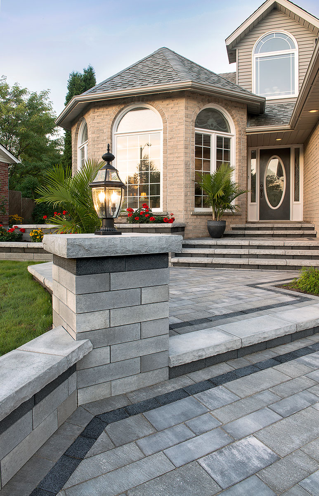
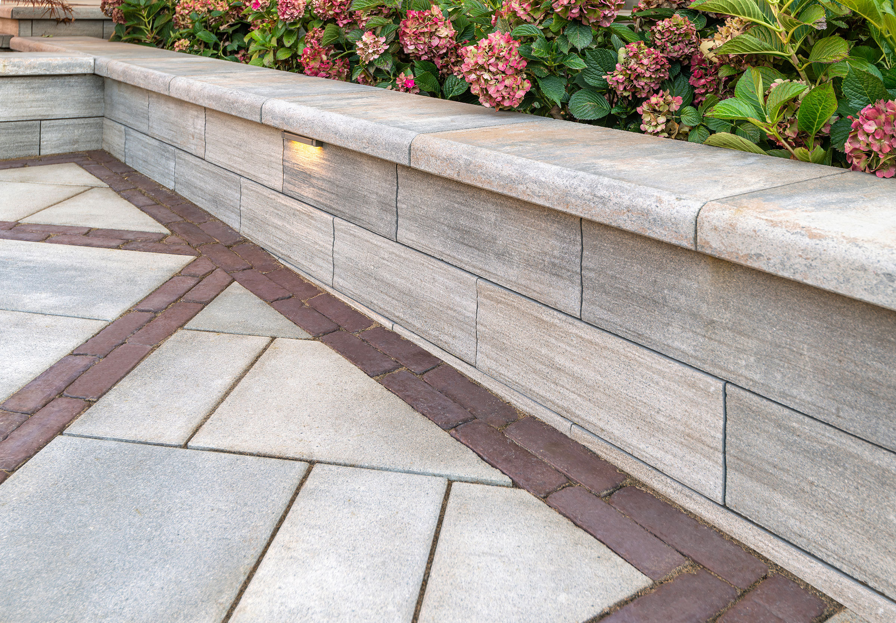

Home · Services
Masonry & Hardscape Services in Warsaw, Indiana
Our Quality Is Set In Stone. The products are only half of what we offer. The other half is expertise — from helping you choose the right stone to calculating exactly how much material your project needs, so you can buy with confidence and build without surprises.
How We Help
Expertise at Every Step
Every service below is designed to help you buy with confidence and build without surprises.
Material Selection & Consultation
A one-on-one conversation about your project. We weigh cost, appearance, durability and installation so your final choice fits your project, your budget and your home.
Product Recommendations
We draw on our team's experience to point you toward materials that perform well for your project, your climate and your lifestyle.
Contractor & Builder Support
Dependable materials, knowledgeable support and a partner who understands that keeping a project moving is the whole job.
Homeowner Project Planning
We help you plan from the ground up, so you know what you need, how it fits together and what to expect before you spend a dollar.
Outdoor Living Design Inspiration
We help you explore ideas, see real projects and translate a vision in your head into a plan you can actually build.
Project Material Estimation
Determine the right quantities before purchasing — reducing waste and avoiding the costly shortages that stall a job.
Product Sourcing
Can't find the material you need? We work to locate specific brick, stone and hardscape products, including items outside standard retail channels.
Project Gallery & Design Ideas
Real completed projects show how our products perform in finished spaces. Browse the gallery ›
Answers to Real Questions
Services FAQ
The specifics homeowners and contractors ask us most — organized by service.
Material Selection & Consultation
A masonry material consultation is a one-on-one conversation with our team about your project. We review your goals, your space and your budget, then guide you to the products that best fit your needs so you are not choosing materials on your own.
Yes. Bring photos or samples of your existing brick, stone or hardscape and our team will help you select materials that blend naturally with what is already there.
Consultation and material selection guidance are part of the service we provide to help you buy the right products. Schedule an appointment and we will confirm the details when you arrive.
Product Recommendations & Estimation
Driveways and patios have different demands, and we can steer you toward pavers rated for the traffic and load each surface will see. Share how you plan to use the space and we will recommend the right style and thickness.
We can recommend brick, stone and pavers chosen specifically for their performance through repeated freeze and thaw cycles, so your investment lasts for years.
We base estimates on your project's dimensions, the product you have chosen and the type of application. Provide your measurements and design details, and our team will help you calculate accurate quantities.
An accurate estimate helps you avoid two common problems: running short mid-project, which causes delays, and over-ordering, which wastes money. Estimating up front keeps your project on time and on budget.
Contractors, Builders & Homeowners
We provide product recommendations, material sourcing, project material estimation and hands-on support tailored to professional workflows, so you can focus on the build while we help handle the materials.
Yes. Warsaw Masonry Supply serves commercial projects and large installations, and our team can help you plan material needs across the phases of a bigger build.
Start by scheduling an appointment. Our team will listen to what you want to build, explain your options in plain language, and help you map out a plan and a materials list so the project feels manageable from day one.
Design Inspiration & Sourcing
Cohesion comes from coordinating materials, colors and finishes across the whole space. Our team helps you select products that work together so your finished space feels intentional, not pieced together.
Yes. Product sourcing is one of our services, and our team can work to locate materials that may not be available through standard retail channels.
We can try. Bring a sample or photo of the product you are trying to match and we will use our manufacturer relationships to find the closest available option.

Let's Plan Your Project Together
Whatever you are building, our team is ready to help you choose materials, estimate quantities and source exactly what you need.